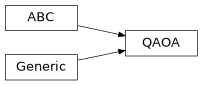

QAOA#
Module: iqm.qaoa.generic_qaoa
- class iqm.qaoa.generic_qaoa.QAOA(problem, num_layers, *, betas=None, gammas=None, initial_angles=None)[source]#
Bases:
ABC,Generic[ProblemType]The most generic QAOA abstract base class.
This abstract base class contains methods such as
_internal_angle_logic()orlinear_ramp_schedule()that can be used by any type / flavor of QAOA.- Parameters:
problem (ProblemType) – The problem to be solved by the QAOA, its type narrowed-down by the specific type of QAOA used.
num_layers (int) – The number of QAOA layers.
betas (Sequence[float] | np.ndarray | None) – An optional list of the initial beta angles of QAOA. Has to be provided together with
gammas.gammas (Sequence[float] | np.ndarray | None) – An optional list of the initial gamma angles of QAOA. Has to be provided together with
betas.initial_angles (Sequence[float] | np.ndarray | None) – An optional list of the initial QAOA angles as one variable. Shouldn’t be provided together with either
betasorgammas. The gamma and beta angles are interleaved, so that the first pair of entries corresponds to \(\gamma_1\) and \(\beta_1\) (the angles of the first QAOA layer). The second pair of entries corresponds to \(\gamma_2\) and \(\beta_2\), etc. …
- Raises:
TypeError – If the provided
num_layersis not an integer.ValueError – If the provided
num_layersis not positive.
Attributes
The angles in the QAOA, including
betasandgammasin onendarray.The beta angles in the QAOA, controlling the mixer Hamiltonian terms.
The gamma angles in the QAOA, controlling the problem Hamiltonian terms.
The number of QAOA layers.
The number of qubits, equal to the number of problem variables if no special encoding is used.
The problem instance associated with the QAOA.
A boolean flag indicating whether the QAOA has been trained at all or not.
Methods
The method for taking estimates of the expected value of the Hamiltonian from the QAOA circuit.
The "linear ramp schedule" for setting the QAOA angles.
The method for taking samples (i.e., measurement results) from the QAOA circuit.
The function that performs the training of the angles.
- property num_layers: int#
The number of QAOA layers.
At first this is set to the value given at initialization, but it may be modified later (which has an effect on
angles).
- property problem: ProblemType#
The problem instance associated with the QAOA.
- property num_qubits: int#
The number of qubits, equal to the number of problem variables if no special encoding is used.
- linear_ramp_schedule(delta_beta, delta_gamma)[source]#
The “linear ramp schedule” for setting the QAOA angles.
Formulas adapted from [3]. It can be used either instead of training the QAOA or as a starting set of angles. The above work uses
delta_betaanddelta_gammavalues around 0.5, but the best choice for these values depends on the problem Hamiltonian.
- train(estimator=None, **kwargs)[source]#
The function that performs the training of the angles.
The training modifies
anglesin-place using theminimize()function fromscipy. The training uses the providedestimatoror a default one (implemented by QAOA’s subclasses).- Parameters:
estimator (EstimatorBackend | None) – An estimator
EstimatorBackendto be used to calculate expectation values for the minimization. IfNone, a default one is picked, but this is depends on the QAOA subclass.**kwargs (Any) – The keyword arguments to pass to the inner minimization
scipy.optimize.minimize().
- Return type:
None
- sample(sampler, shots=20000)[source]#
The method for taking samples (i.e., measurement results) from the QAOA circuit.
Takes a
SamplerBackendand uses it to getshotssamples. The backend is responsible for building the quantum circuit and taking the measurements (or obtaining the samples some other way), using information from theQAOAobject that is passed to its methodsample().- Parameters:
sampler (SamplerBackend) – The sampler to use to generate samples. The sampler is an instance of a subclass of
SamplerBackendwith asample()method.shots (int) – The number of shots to be taken.
- Returns:
A dictionary whose keys are bitstrings representing the samples and whose values are their respective frequencies, so that the sum of the values of the dictionary equals to
shots.- Return type:
- estimate(estimator)[source]#
The method for taking estimates of the expected value of the Hamiltonian from the QAOA circuit.
Takes a
EstimatorBackendand uses it to get estimates of the expected value. The backend takes all the necessary information from theQAOAobject that is passed to its methodestimate().- Parameters:
estimator (EstimatorBackend) – The estimator used to get the expected value. The estimator is an instance of a subclass of
EstimatorBackendwith a methodestimate()of the appropriate signature.- Returns:
An estimate of the expectation value fo the Hamiltonian. Not normalized in any way.
- Return type:
Inheritance
